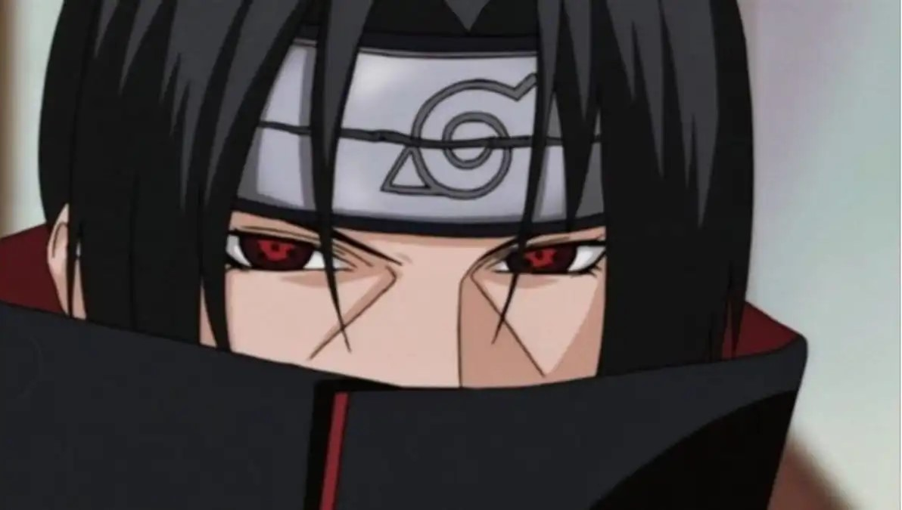
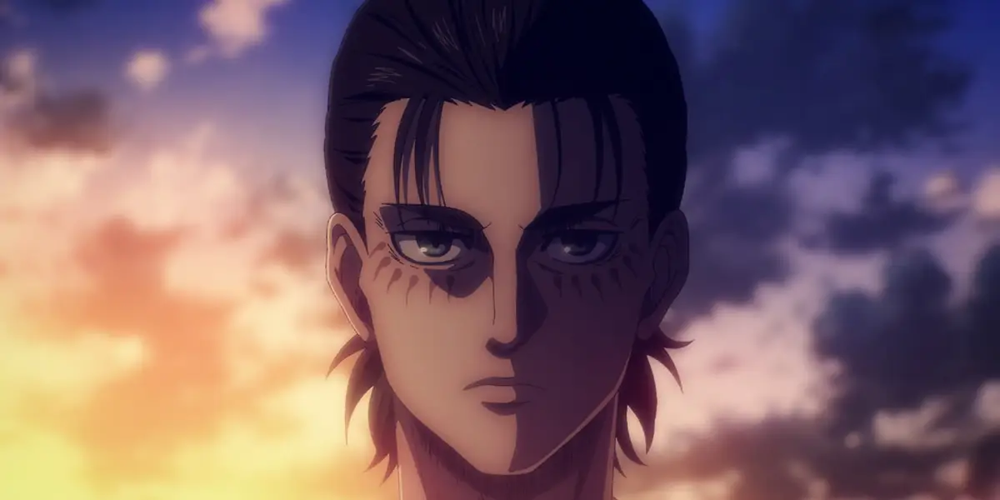

My Favorite Anime
Now, One Piece. One piece is my top one. It what brings me closer to watching a lot of episodes. Before One piece, I usually watch anime that have 25 episodes max. Started with One Piece that I start to watch animes that have more episode than that such as naruto, gintama, black clover and more. I have been watching one piece since I was a kid, once I got back from home and everything cause one piece was aired at our television. Although not in a correct order of episode, I do enjoy it. Then one day, I found my brother watching it during quarantine period which is around early 2020, I started watching it from episode one and instantly hooked. Yeah I know too many episodes, 1000+ well, I did not have anything to do at that time since I just finished my SPM. I watch it everyday until I catch up. I keep watching it until now becauseI have grown attached to the characters especially luffy. Luffy is a very cute and funny boy yet at the same time he's also brave and cares about his friends. The anime actually is not only about pirates but a lot more. It can make you smile, laugh, get mad and even cry. It has a lot of lesson and very fun too watch to the point where 1000+ episodes is actually not enough. I can't wait to see luffy grow up and be a pirate king one day.
×

Naruto is one of the pretty good anime I would say, it's a classic. Well I know like 70% of the episodes are fillers, they basically just tell about the flashbacks and everything and the fact that this whole anime is just naruto trying to persuade sasuke to be back I still enjoy it. I think it's because of the friendship and how fun the anime is actually. I love the relationship naruto have with the nine-tailed fox. This anime makes me feel nostalgic and just have this warm feeling when thinking about it

Favorite 'antagonist'
×

Haikyuu actually has a special place in my hear. As cliche as it might sound I see the charcters as my kids. Mostly all of them and not just from one team. I know, it's just volleyball, sport anime does not have much action so, some people might find it boring. However, this anime actually is so good and so wholesome. It's about hardwork, talent, friendship, teamwork. Surprisingly watching this anime has made me CRY. It gets really emotional when seeing someone who starts from the bottom and tries their best to catch up, finally making an impact and prove themselves. It really just warms my heart.
×

Jojo's bizzare adventure. Yeah, I know, a good choice right? Honestly in my opinion this anime is actually so good despite how memeable it is. It's funny, it has fighting scene, it can be quite sad too but most of all it's iconic. If I'm speaking truthfully I used to 'reject' watching this because of the art style. I used to think it's ugly cause I'm not used to it. But once I gave it a shot, thanks to my brother, I actully find this anime so fun. It's really enjoyable and hilarious. Sometimes this anime could have a very serious scene yet it somehow made it funny. Talking about funny of course it can't beat jintama. I love jintama too but anyways, if people did not watch this anime they would find each scene VERY questionable. If someone took the scene out of context or even with context it will look qiute weird. But then again, I enjoy watching it and I find the story itself also is pretty good. I hope it does not get too complicated tho
×

Attack on titan is one of the first anime that I enjoy watching. I started watching it way before I properly start watching one piece. I think I was around 14 or 15 years old that time? but anyways I love attack on titan. The cinematography, the story, the plot twist, the characters, everything is well written in my opinion. I think isayama (the writer) really did a great job to create the story. The plot is actually so interesting and very detailed. Some people might find it to be confusing cause it is complicated. I need to read the manga to actually understand where the story is going and I really liked it. Not only the story but the animators and voice actors did such a great job to convey the characters feelings and expression. The animation is just outstanding. It was so pretty.

Favorite 'antagonist'

Favorite Titan
×